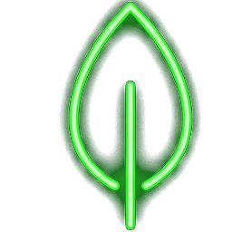
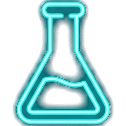

讓學生一眼看懂：不同種類的糖，甜的「力量」與體積差別有多大？
AntiGravity 智慧工作流 · 2026
請掃碼或在左下方輸入：你平時最常在哪裡吃到或喝到「代糖」？
高強度的甜味劑，其來源主要分為「天然提取」與「化學合成」兩大陣營


拖動下方滑桿，直觀感受「一般糖類」與「超高強度代糖」的實體份量差距！
以甜度 100 分為基準，要達到這個甜味，我們需要在課堂上搬出整整兩大袋 5 公斤裝的實體砂糖！
同樣達到 100 分的甜度！超強代糖糖精只需要極微小的 20 公克，大約是一小茶匙的粉末結晶體，就能平手兩大袋砂糖！
當需要控制糖分或熱量時，你會首選哪一種甜味來源？